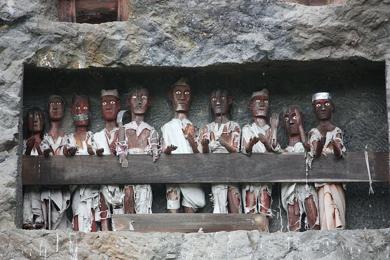

Tradisi Pemakaman di Toraja: Antara Kehidupan dan Kematian
1. Sejarah Tradisi Pemakaman di Toraja
Tana Toraja, sebuah wilayah di Sulawesi Selatan, memiliki sejarah panjang dalam menjaga tradisi pemakaman yang unik dan sakral. Kepercayaan masyarakat Toraja terhadap kematian didasarkan pada ajaran Aluk Todolo, sistem kepercayaan leluhur yang mengatur berbagai aspek kehidupan, termasuk pemakaman. Dalam keyakinan ini, kematian bukanlah akhir, melainkan transisi menuju kehidupan di alam roh atau Puya. Oleh karena itu, prosesi pemakaman dianggap sebagai ritual penting yang harus dilakukan dengan penuh penghormatan dan persiapan yang matang.
Tradisi ini telah berlangsung selama ratusan tahun dan diwariskan dari generasi ke generasi.Awalnya, pemakaman dilakukan di dalam gua-gua alami di pegunungan, tetapi seiring waktu, masyarakat mulai membangun tebing makam dan peti mati gantung untuk menempatkan jenazah leluhur mereka. Tradisi ini juga mencerminkan status sosial seseorang, di mana semakin tinggi letak makamnya, semakin tinggi pula derajatnya dalam masyarakat. Hingga saat ini, ritual pemakaman Toraja tetap dijaga dan menjadi salah satu warisan budaya yang menarik perhatian wisatawan lokal maupun mancanegara.